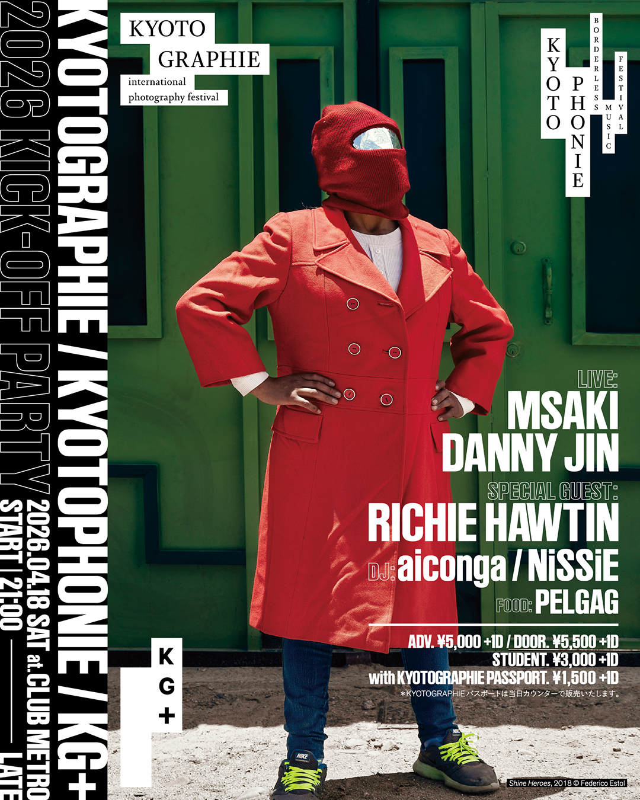
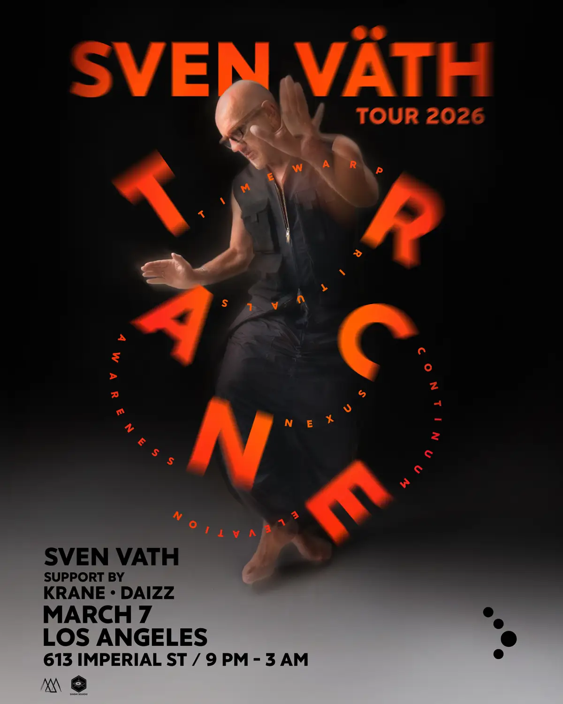

Nuevos Eventos
Marco Carola en Gate Club Paris
El legendario Marco Carola llega con toda su energía, técnica impecable y ese groove inconfundible que lo ha convertido en uno de los DJs más respetados del mundo. Con décadas de trayectoria en la escena electrónica, sets maratónicos y una conexión única con el público. Ven a vivir una fiesta donde la música es protagonista y la energía no baja hasta el amanecer.
120 USD

Sven Vath